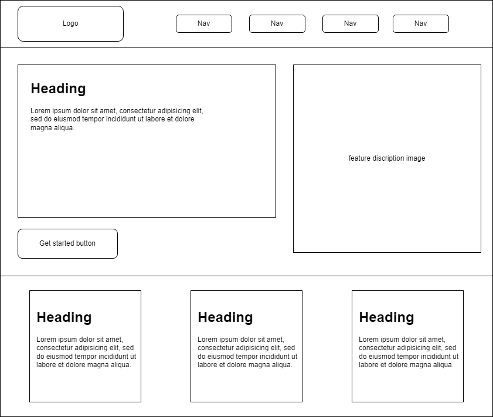
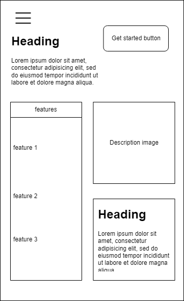

Planet Pal: Exoplanet Display Archive - Site Plan
Site Name
Planet Pal was selected as the site name because it is friendly, easy to remember, and emphasizes companionship with knowledge about planets. It aligns with the site’s mission to make complex space data approachable and engaging for learners and enthusiasts.
Site Purpose
The purpose of the site is to provide an educational and visually engaging display of exoplanet data, featuring interactive elements and curated planet facts. The site will serve students, educators, and astronomy enthusiasts seeking a reliable and fun resource to explore distant worlds beyond our solar system.
Scenarios
- What are the most Earth-like exoplanets discovered so far?
- Can I compare different exoplanets based on their size, temperature, or distance from Earth?
Color Schema
- #0d1b2a (Deep Space Blue): Used for the background to represent the depth of space and provide strong contrast for text.
- #00b4d8 (Aqua Blue): Used for headings and accents to reflect the futuristic and scientific tone of the site.
- #e0e1dd (Light Gray): Used for body text to ensure readability on the dark background.
- #90e0ef (Highlight Blue): Used for strong/emphasis elements to draw attention without overwhelming the visual tone.
Typography
- Orbitron (Google Font): Used for all headings to convey a futuristic, tech-forward feeling suitable for a space-themed site.
- Roboto (Google Font): Used for all body text for its readability and modern aesthetic.
Wireframe
Below is a basic wireframe of the homepage layout:

